📜 Свиток приключений
The start of a tale (Начало пути)
Старт кампании — точка «Начало» на Miro-таймлайне, 14 Калистрила 4710. Герои приглашены Джаманди Алдори в замок Алдори на званый ужин — клич («Hunger Games») на отжимание Украденных Земель.
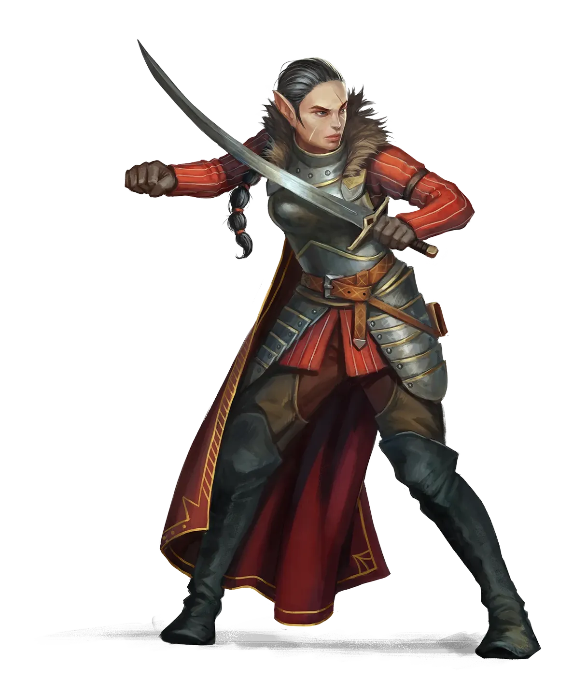
Джаманди Алдори👤Мэр Сильверхолла (и…A night in the forest (Ночь в лесу)
Стразора покусал ликантроп у Сильверхолла (DM correction в Discord — «важная деталь для будущего»). Дорожная сессия: путь от Сильверхолла к замку Алдори с ночёвкой в лесу (по названию сессии «A night in the forest» и датам Miro-таймлайна).
A way home? (Дорога домой?)
Прибытие героев в замок Алдори Джаманди, 23 Калистрила 4710. Дипломатия с гостями замка — будущими правителями земель: конкуренты клича (Железные Призраки, барон Дрелев, Маегарн Варн) и прочие гости.
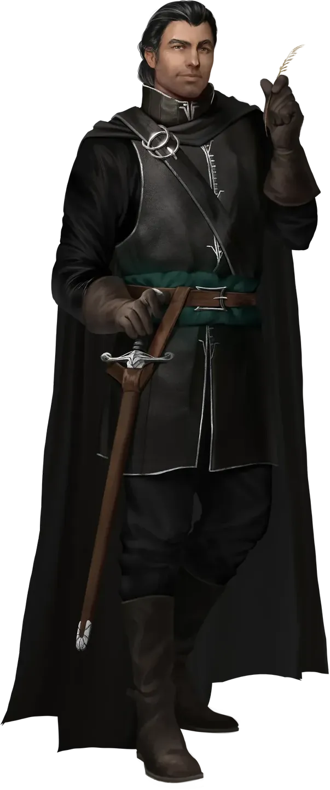
Майгар Варн (Маегар…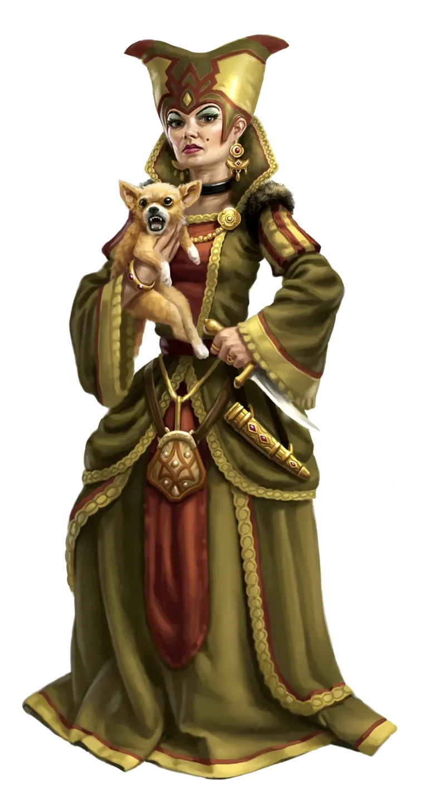
Барон ДрелевDestruction all around us (Разрушение вокруг нас)
Ночной налёт синдиката «Чёрные Слёзы» на поместье Алдори: дракон и синяя великаша-предводительница разносят замок, в тени пожара действуют ассасины. Герои спасают: некромантку от огра; прислугу от дракона; Амири и Валери в подвале (за изувеченным великаном, меч Амири при нём); встречают Харрима в горящем западном крыле; спасают эльфийку-к
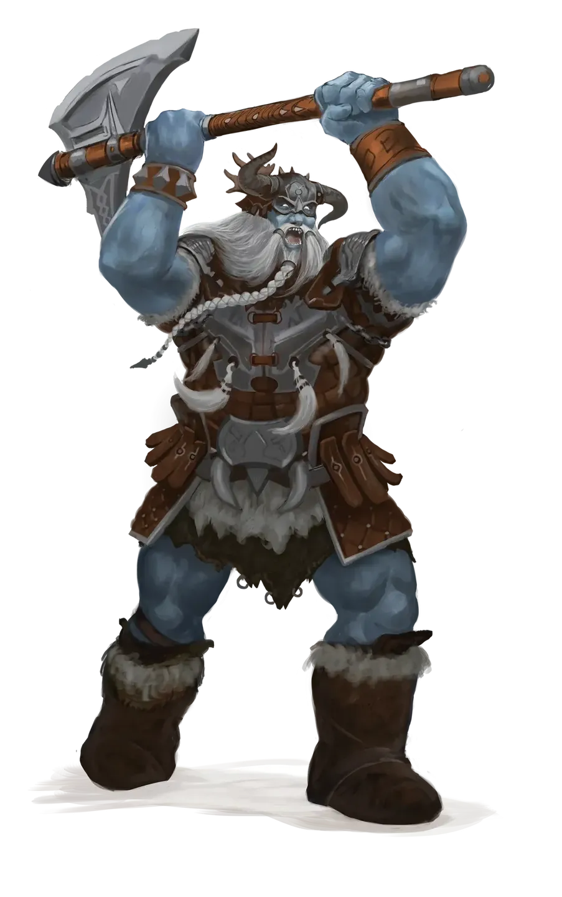
ПРОТИВНИКСиняя великаша-предводительницаNew dawn (Новый рассвет — утро после нападения)
Джаманди распределяет задачи: героям достаётся Зелёный Пояс, первая база — торговый пост Олега. Предательство Тартуччио: он уводит за собой Амири, Харрима и Джейтал.
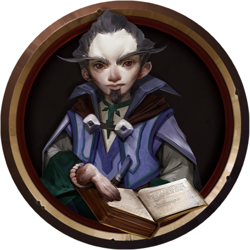
ТартуччиоМайгар Варн👤Солдат с урнойEnd of a long road (Конец долгой дороги — путь к посту Олега)
Прибытие на пост Олега. Сон Кроу №1: фигуристая женщина-дух земель просит остановить Рогача и друида.
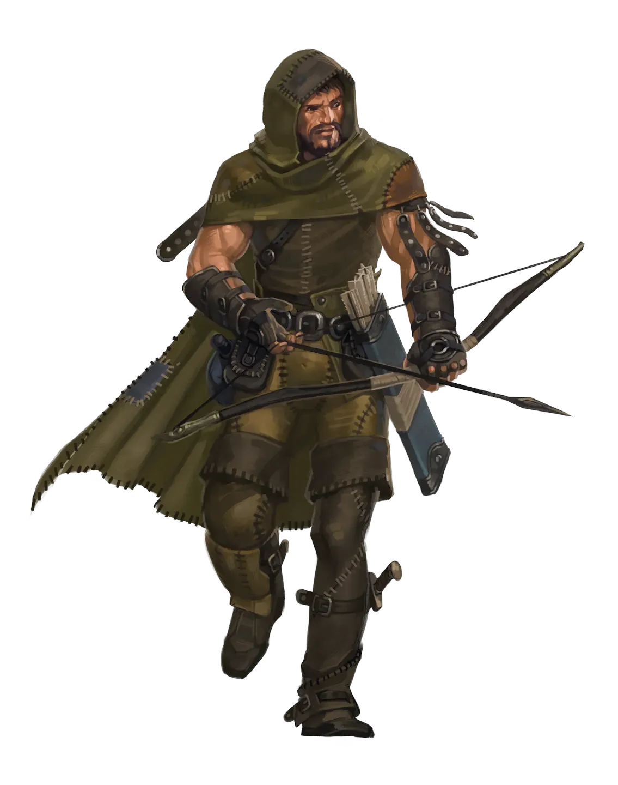
ПРОТИВНИКХаппс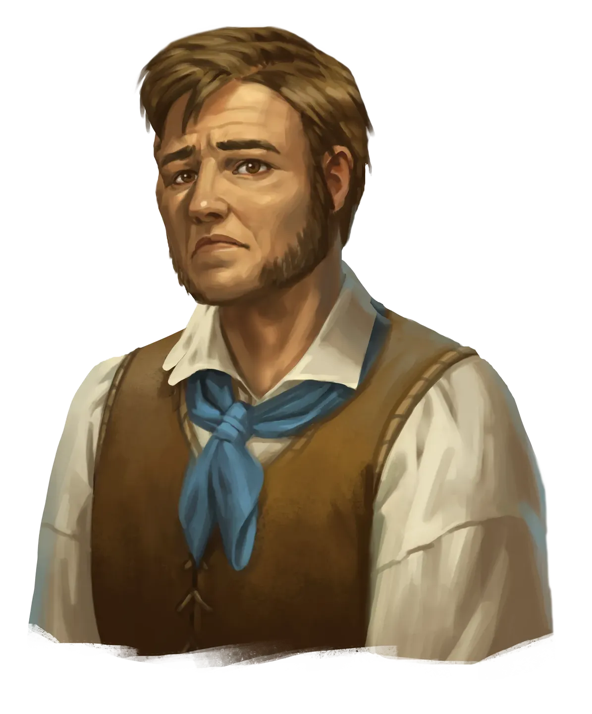
Олег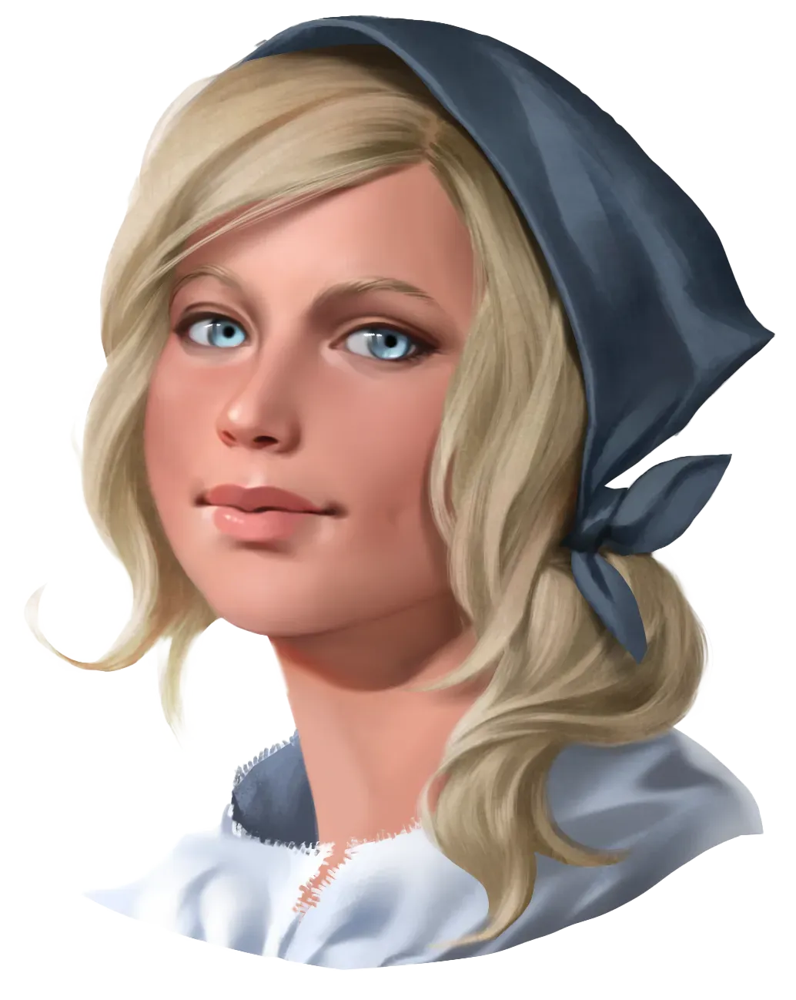
Светлана👤Женщина-дух земельEntering the new world (Вход в новый мир — имена лошадям, кобольды)
Найдены кобольды, объевшиеся лунным редисом. Визит к Боккену: Тартуччио уже скупил все зелья и ушёл на юг.
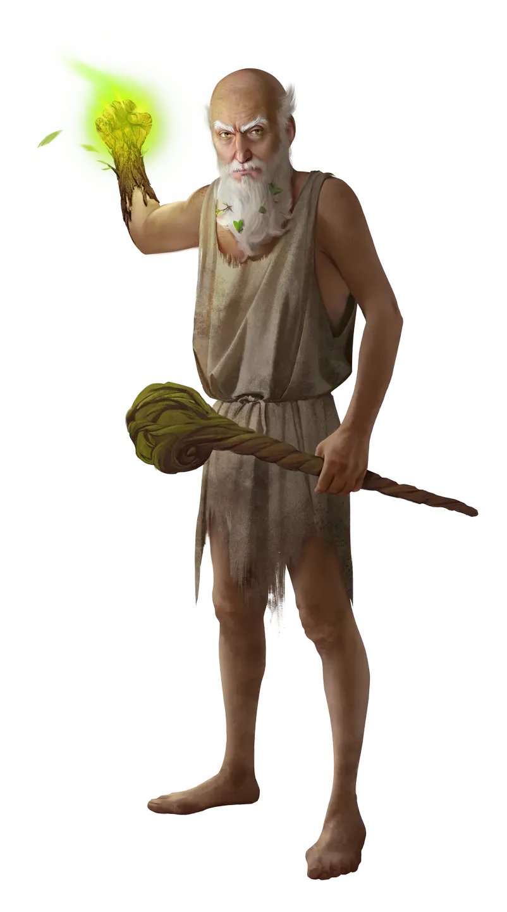
ПРОТИВНИККурмиль (упомянут)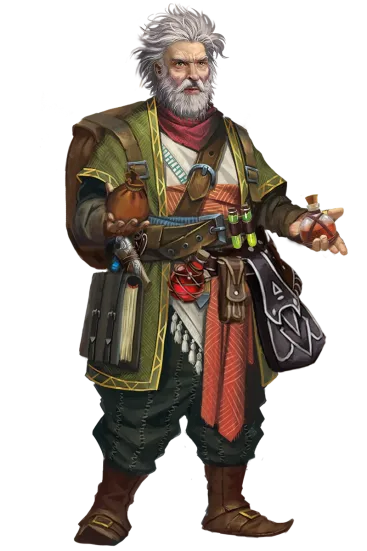
Боккен👤Джод👤СоломонLooking for a path (Погоня за Тартуччио)
Тартуччио ушёл в подземный склеп; при появлении героев убегает, оставив наёмников и Амири прикрывать. В гробнице найден станс Первого Испытания (Акло) — текст, описывающий события пира у Алдори (S4).
Mite infestation (Гремлины и кобольды)
Племя кобольдов Пепельная Чешуя: Стразор переименовывает его в «Дружину Беспределья из Кобольдов», выдаёт нашивки и заключает договор о слежке. Зачистка гигантского дерева гремлинов: бой с гремлинами наверху и внизу (пытали кобольдов), спасение Мик-Мэка, гремлин-наездник на пауке, бой с многоножкой (Кроу теряет сознание от яда), возврат р
 ПРОТИВНИКТартук
ПРОТИВНИКТартук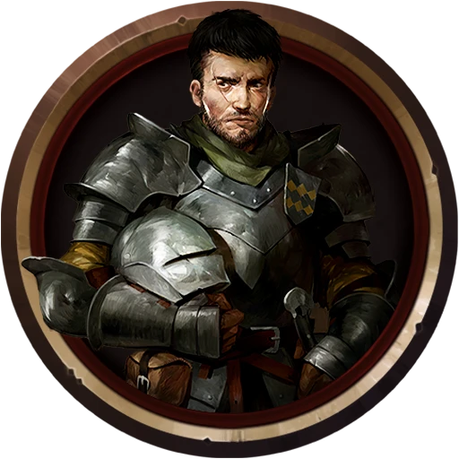
КестенMany paths, but no roads (Карта сокровищ)
У моста (табличка с ржавым колокольчиком) из воды выходит нежить и просит доказательства смерти Рогача. На севере найдено «когтистое дерево» с карты (S8); выкопан сундук: книга мага, волшебная палочка, улучшенный кинжал, серебряное кольцо.
Where did the road take us? (Технолига)
На юге компас Каэлума показывает «друзья рядом»: найден лагерь — наёмники, 2 технолиговца и пленница-андроид с такими же татуировками, как у Каэлума. При поиске лагеря бандитов на севере найден повреждённый алтарь Дезны — Кроу восстанавливает его.
Hidden Temple, Crouching Bear (PR1ME-4, Регонгар, Октавия, Тристиан)
Через портал — штурм основного лагеря Технолиги (тренога, 3 турели, охрана). Компас Каэлума указывает на руку PR1ME-4 — там кибертатуировка.
One less trouble (Тристиан + Крессель + феи)
Завершён тяжёлый бой с медведем-аберрацией (Тристиан — клирик-целитель). Найден лагерь бандитов на платформах в деревьях; предводительница Крессель взята в плен.
 ПРОТИВНИККрессель
ПРОТИВНИККрессельBandit Fort (Потрошила + клыковица + подход к форту Рогача)
Зона прорыва плана земли; логово Потрошилы — чудовище размером с замок пробуждается, партия чудом сбегает без боя (Miro: 5 Гозрана). Подход к форту Рогача: форт на возвышении 30 футов, найдена скрытая тропа к заднему периметру.
The Lord is Dead. Long live the Lord (Рогач убит)
Ожесточённая битва с бандитами в тылу форта. Рогач убит.
 ПРОТИВНИКРогач (Stag Lord)
ПРОТИВНИКРогач (Stag Lord)The noble party (Акирос + хартия на королевство)
Повторная охота на Потрошилу — подготовленная партия побеждает. Через неделю — Рестов: герои получают хартию на основание королевства (5 Дезнуса 4710).
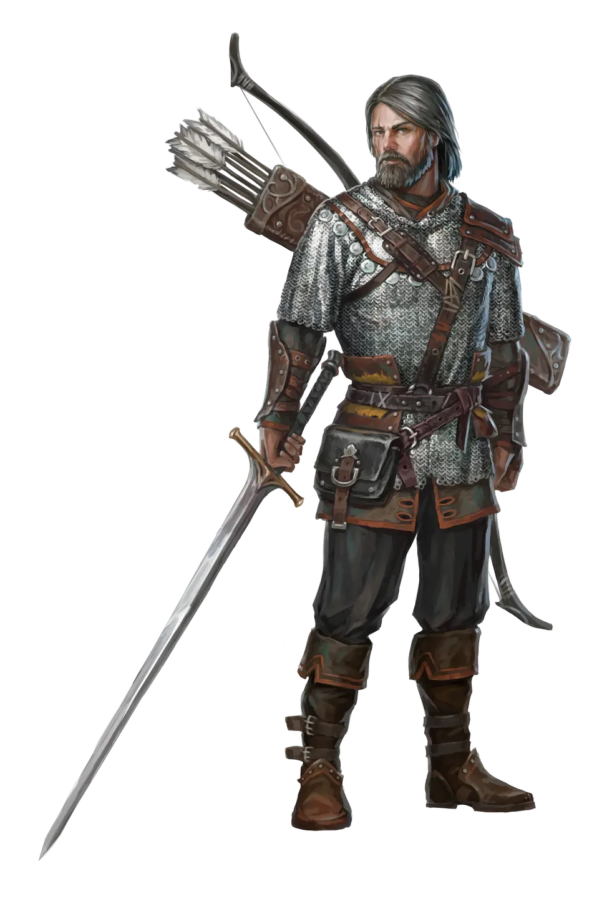
Акирос👤Женщина-дух земель👤Призрак у мостаWeek of deliberation (Неделя переговоров с благородными домами)
Пир в Рестове (9 Дезнуса 4710): герои налаживают связи с благородными домами перед основанием королевства. Неделя переговоров по расписанию встреч в поисках «замечательной сделки».
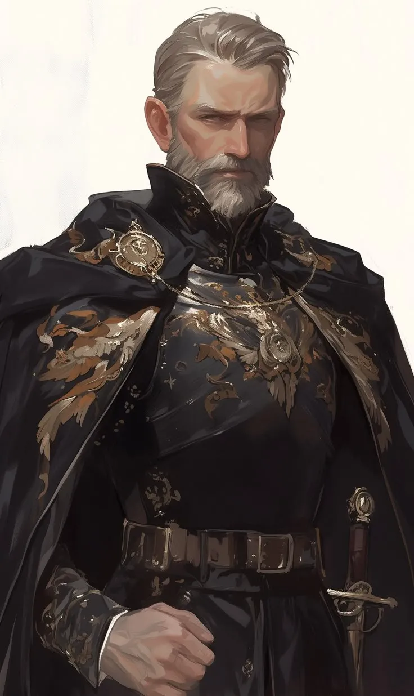
Клод Орловский👤Жрица Шелин в Ресто…The founding (Основание — зомби на кладбище)
Веха Kingdom Timeline: «Основание Оплота», Дезнус 4710 — основание столицы королевства (сопоставлено с названием сессии «The founding»). Возвращение во владения — беспорядок: зомби с кладбища мешают рабочим (Miro: «Зомби в столице», 24 Дезнуса).
 ПРОТИВНИККурмиль (злой друид, брат Боккена)
ПРОТИВНИККурмиль (злой друид, брат Боккена)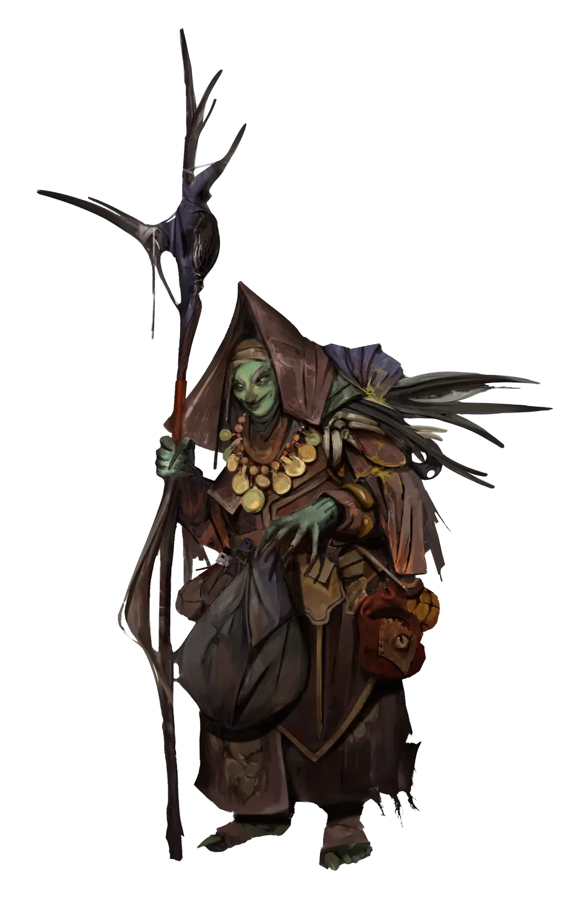
Бабуля БелдамKingdom come (Тартук = Тартуччио!)
Вехи Kingdom Timeline за Эрастус 4710, попадающие в таймскип: 2-й уровень королевства и основание Татцельфорда. Поход в пещеру кобольдов, истребление племени («первый геноцид»).
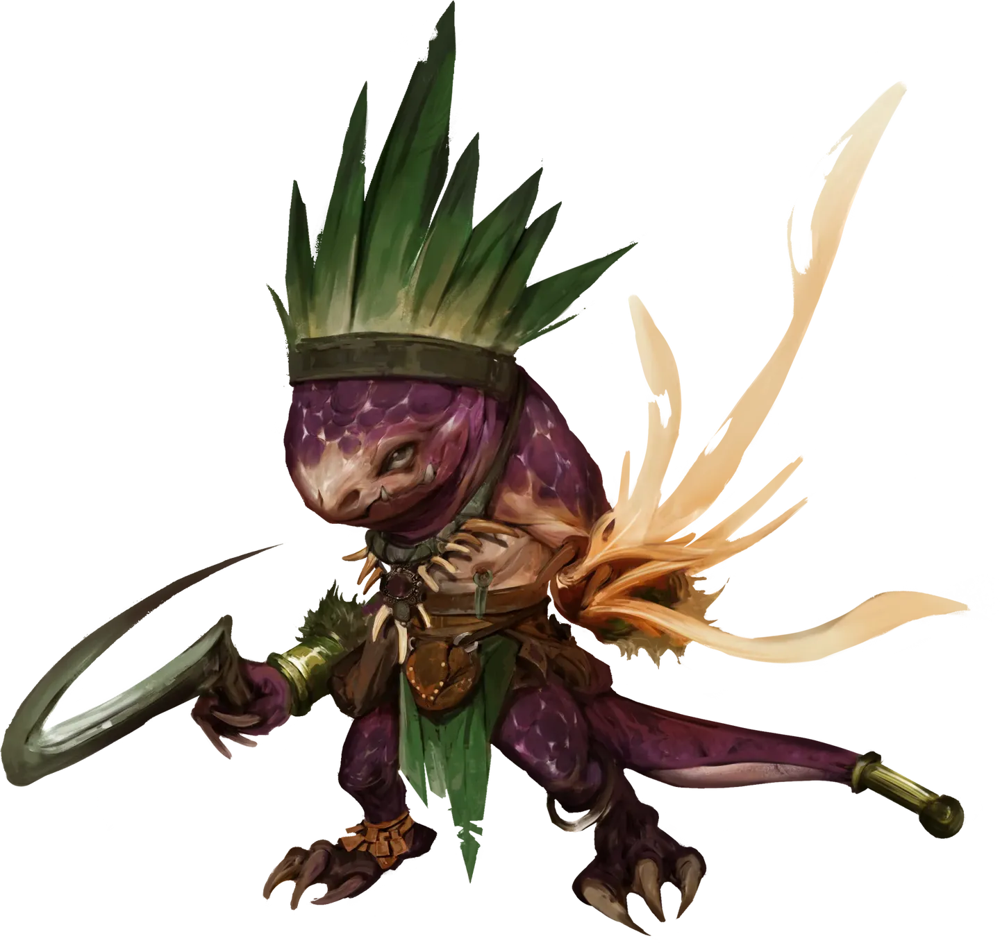
ПРОТИВНИКТартук (= Тартуччио)Pains of ruling (Визитёры + грибы)
Гигантский мутировавший гриб глотает Кроу и Харрима и начинает переваривать заживо — их едва вытаскивают (Холмогорье, квест грибов Белдам). Расширение королевства: территория до рудника, дорога, пивоварня.
Months go by (Волколаки)
Двое жителей королевства убиты — работа волколаков (Miro: «Проблемы с волками», 1 Ламашана). Засада с Амири как приманкой: свирепые волки + волколак.
 Кундал
КундалKingdom grows? (Терессия, палка Стразора, начало fae-арки)
Осмотр вещей пропавшего постояльца: волколак работал с Эйриком, использующим животных для боёв на арене. Визит к дриаде Терессии: отдала волшебные перья и раскрыла, что палка Стразора — часть феи (спрашивать в лесах).
New treasures? (Гробница келлидов + Джейтал + проклятая коса)
У входа в гробницу вождя келлидов партия встречает Джейтал — та направлялась туда же. Зачистка гробницы: полчища летучих мышей, ловушки с негативной энергией (Джейтал невосприимчива — доказала пользу команде), битва с нежитью.
Fae? Fae :fear (Пир у Тана)
Летний Шторм заключает пари с Таном: если он сможет развлечь Тана через героев — те возвращаются домой; если провал — кролик становится собственностью Тана. Стразор разговаривает с Архивисткой.
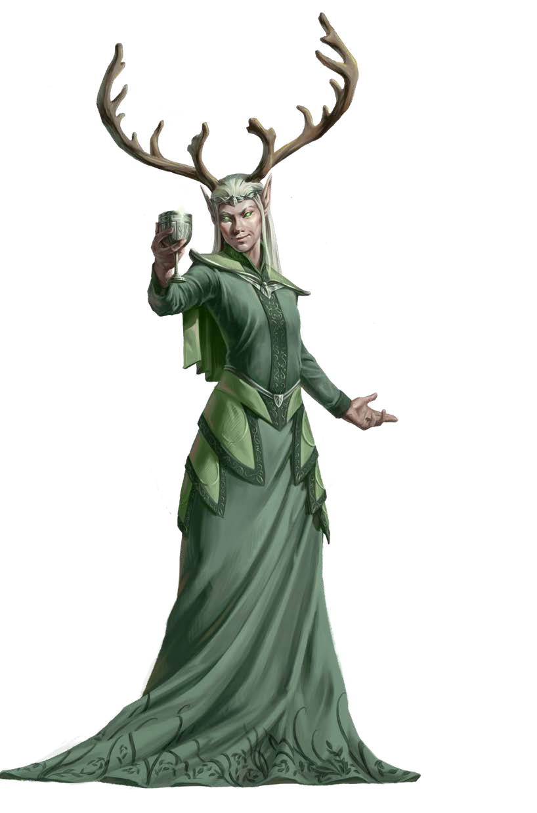
ПРОТИВНИКТан🪙ТРОФЕЙ20 золотых от Летнего Шторма Древень (Капитан Ст…👤Дриада Клипхатис
Древень (Капитан Ст…👤Дриада КлипхатисEscape from FAE! (Побег из Первого Мира)
Каэлум использует Ventriloquist Ring: поворачивает кольцо и громко кричит «бегите!» — голос проецируется в толпу фей за 60 футов. Chase mechanics: герои прорываются через 5 препятствий — толпа фей, элитная стража, живой лес, лиственный шторм, и финальный бой с гончими.
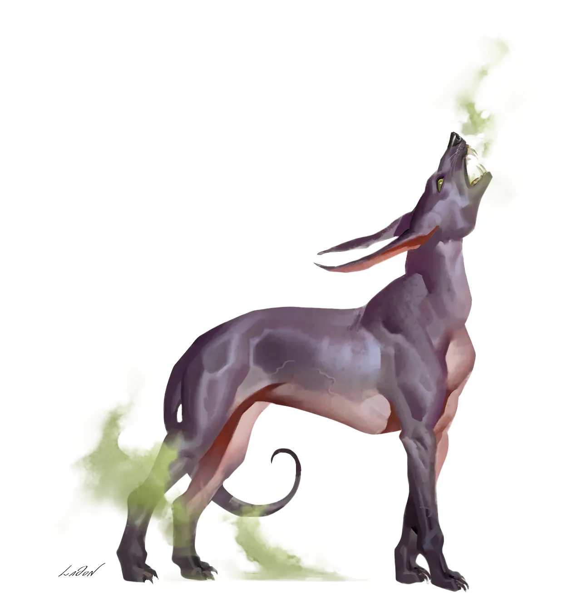
ПРОТИВНИКГончие Тана (столовые псы)⚔️ПРОТИВНИКswamp ooze✦ТРОФЕЙСеребряная фигурка гончейСтражи Тана (растит…👤Искатель ИстиныNo rest for the kings! (Тролльи псы, дварфийская шахта, мёртвый единорог)
Кроу рассказывает партии: к нему вечером в столице приходила Джейтал. Партия наткнулась на поляну с трупом единорога рядом с гнилым 'болотом'.
 ПРОТИВНИКТролльи псы⚔️ПРОТИВНИКЭлонакс💀ПРОТИВНИКОрда дварфийской нежити✦ТРОФЕЙРуда холодного железа
ПРОТИВНИКТролльи псы⚔️ПРОТИВНИКЭлонакс💀ПРОТИВНИКОрда дварфийской нежити✦ТРОФЕЙРуда холодного железаHalf a year passed (Управление королевством и дипломатические стратегии)
Полный ход королевства Светоч — достигнут 3-й уровень. Партия (Стразор+Кроу+Каэлум+Нок-Нок+Тристиан) отправляется на восток исследовать «Камляндию» (видимо равнины восточнее королевства).
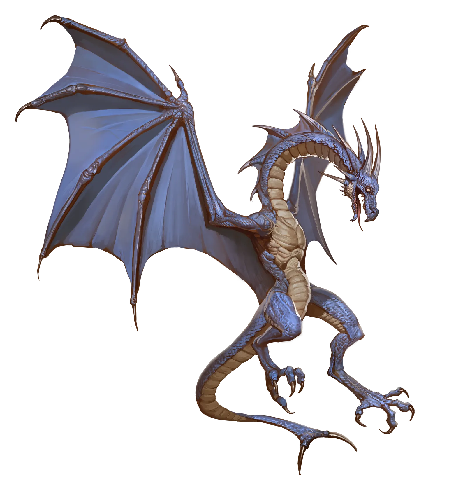
ПРОТИВНИКДве виверны🪙ТРОФЕЙСокровище-приманка виверновAllies or enemies? (Дипломатия в Кобольтских землях и засада в лесу)
Продолжение клиффхенгера 27. Очередной полный ход королевства Светоч, приближается 4-й уровень.
 ПРОТИВНИКТролль-псы (вторая встреча)🐺ПРОТИВНИКВарги с пикси-наездниками🧌ПРОТИВНИКТри тролля (преследовали рейнджера)✦ТРОФЕЙДоговор о серебряной шахте кобольдов
ПРОТИВНИКТролль-псы (вторая встреча)🐺ПРОТИВНИКВарги с пикси-наездниками🧌ПРОТИВНИКТри тролля (преследовали рейнджера)✦ТРОФЕЙДоговор о серебряной шахте кобольдов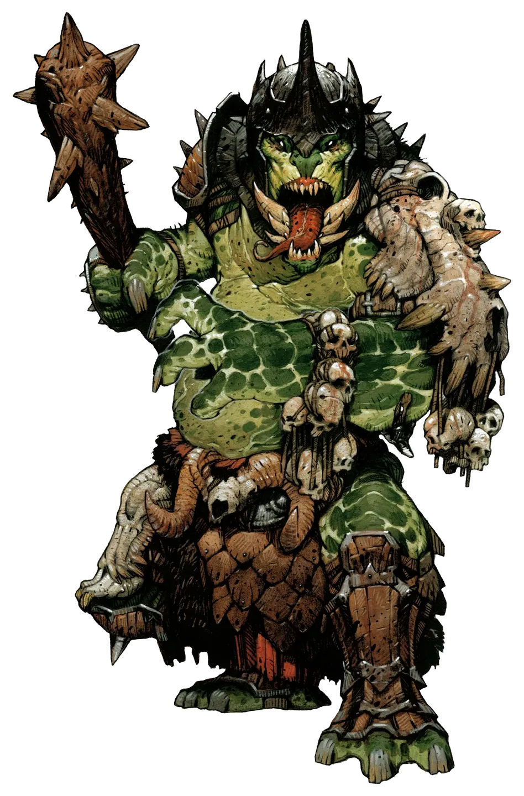
Лорд ХаргулкаСтраж Харгулки👤Гоблины Шипоклубки …Эльфийская крепость и хороводы Финн де Ладры
Собака Экундайо лаем привела партию к раненому хозяину после боя с троллями Граглберта. Кроу прочитал окровавленный лист — Третий Трайл.
 ПРОТИВНИКТри тролля-разбойника🧌ПРОТИВНИКСтая троллей-псов с невидимыми пикси⚔️ПРОТИВНИККвиклинг✦ТРОФЕЙНаручи из виверновой чешуи
ПРОТИВНИКТри тролля-разбойника🧌ПРОТИВНИКСтая троллей-псов с невидимыми пикси⚔️ПРОТИВНИККвиклинг✦ТРОФЕЙНаручи из виверновой чешуи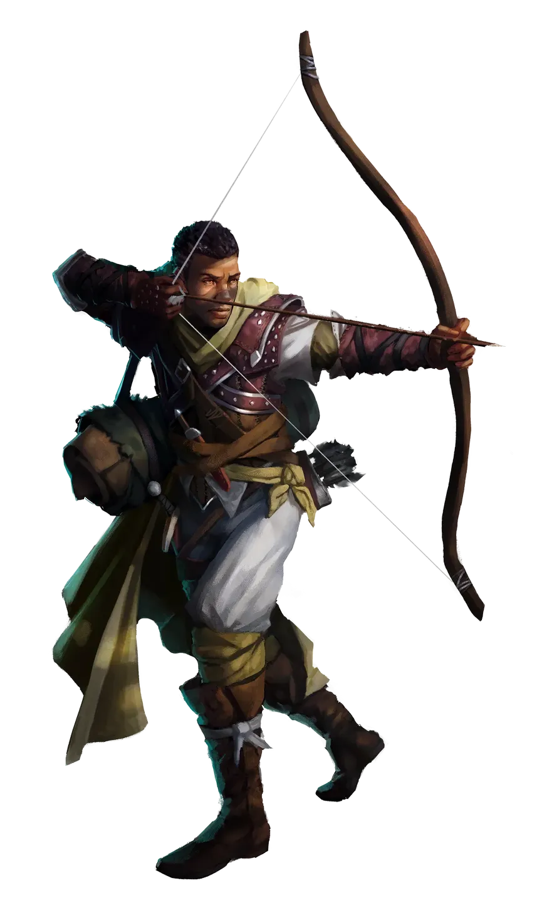
Собака Экундайо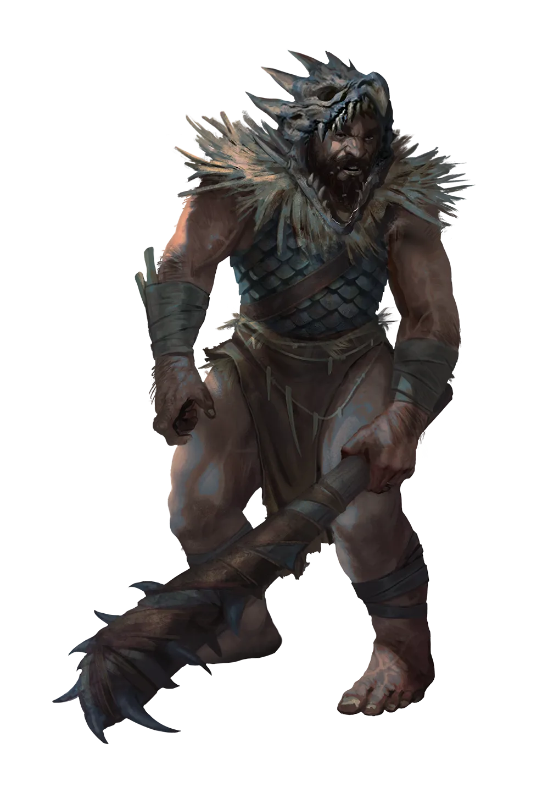
Граглберт👤Окровавленная дама …Танец баобан сид и хаос в королевстве
Партия поднимается на вершину первой башни эльфийской крепости и встречает Баобан Сид — фею-нежить с окровавленными руками среди цветов. Кроу читает эльфийский текст из сундука.
 ПРОТИВНИКБаобан Сид🌿ПРОТИВНИКТравяной/лиственный леший с лианами✦ТРОФЕЙАлебастровая статуя танцующей эльфийки
ПРОТИВНИКБаобан Сид🌿ПРОТИВНИКТравяной/лиственный леший с лианами✦ТРОФЕЙАлебастровая статуя танцующей эльфийкиМерцающий остров и взгляд Йог-Сатота
У разбитых гнилых ящиков на причале партию атакует из засады «Ходак» — шамблер. Партия продвигается через крапиву и туман к древней разрушенной башне в центре острова.
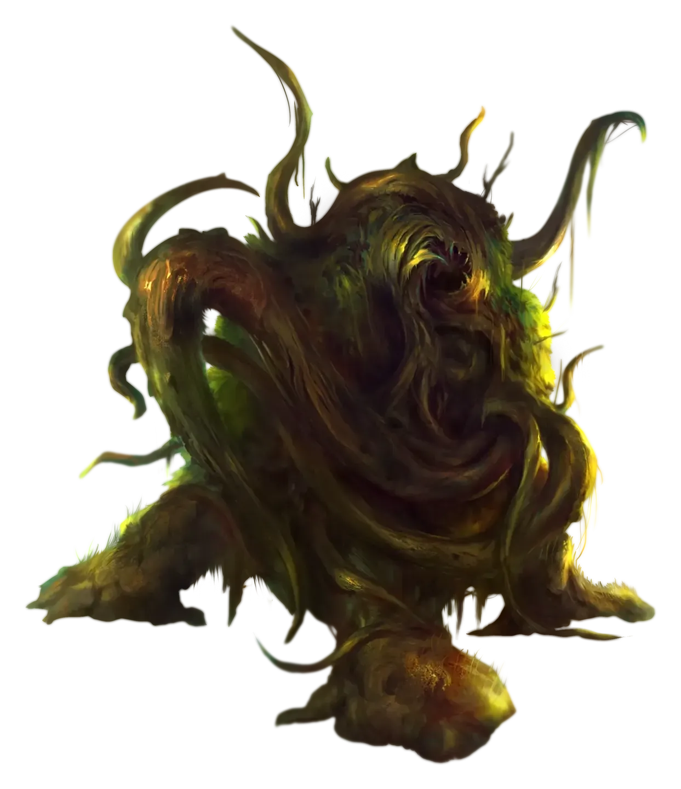
ПРОТИВНИКШамблер «Ходак»⚔️ПРОТИВНИКВиловисп (одинокий блуждающий огонёк)⚙️ПРОТИВНИКАнимированная статуя Йог-Сатота (страж сфер)⚗️ТРОФЕЙЗелье плавания (среднее)Тени в подземном храме и племя ящеров
Спустились по лестнице в нижний зал — чёрные стены, пол в чёрной смоле, тени-силуэты вдоль стен. После боя обнаружены: торчащая из тушки бормотуна Кровавая Кукри Жажда; в кучке пепла одной из «теней» — кольцо с символом Фаразмы (240 gp); камень в полу со спиралью, излучающий сильную магию (выше уровня партии для Ide
 ПРОТИВНИКМногородный бормотун (1)⚔️ПРОТИВНИКМногородный бормотун (2)⚔️ПРОТИВНИКВолль-висп, выдающий себя за предка ящеров✦ТРОФЕЙПалочка Усиков Гнили (Grim Tendril)
ПРОТИВНИКМногородный бормотун (1)⚔️ПРОТИВНИКМногородный бормотун (2)⚔️ПРОТИВНИКВолль-висп, выдающий себя за предка ящеров✦ТРОФЕЙПалочка Усиков Гнили (Grim Tendril) Тролль-курьер Харгу…👤Племя людоящеров на…
Тролль-курьер Харгу…👤Племя людоящеров на…Гиена-курьер, кобольды-шпионы и серебряный след
Допрос сдавшегося мимика-гиены. Полный ход королевства — достигнут 4-й уровень!
 ПРОТИВНИКМирные грязевые элементали (Mud Mephits / M…⚔️ПРОТИВНИКПлезиозавр озера Серебристый След✦ТРОФЕЙПлатиновый идол в форме ухмыляющегося черепа
ПРОТИВНИКМирные грязевые элементали (Mud Mephits / M…⚔️ПРОТИВНИКПлезиозавр озера Серебристый След✦ТРОФЕЙПлатиновый идол в форме ухмыляющегося черепаОгненный дрейк на Когте: туч, волков и подложный дракон
На середине подъёма по горе Коготь — звук дождя на безоблачном небе. Кобольды привели партию к огромной крылатой ящерице — 'эти пришли к тебе!'.
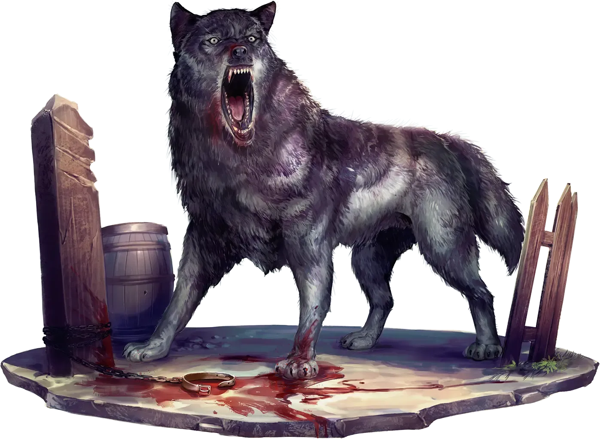
ПРОТИВНИКvargs environment🐺ПРОТИВНИКПринц волков⚔️ПРОТИВНИКwolves pack✦ТРОФЕЙПалочка Драконьего Дыхания (Wand of Dragon …Нарглум Трёхглазый и тень пропагандиста
Партия (Стразор, Кроу, Каэлум + Нок-нок + Харрим) прибыла к посту Олега за полдня по новым дорогам. Бой с тремя крылатыми гоблинскими псами.
 ПРОТИВНИКГоблин-друид у ворот Олега
ПРОТИВНИКГоблин-друид у ворот Олега ПРОТИВНИКГоблин-культист, присягнувший Нок-ноку🕯️ПРОТИВНИККрылатые гоблинские псы Ламашту🛡️ТРОФЕЙКрепкий щит (Sturdy Shield)
ПРОТИВНИКГоблин-культист, присягнувший Нок-ноку🕯️ПРОТИВНИККрылатые гоблинские псы Ламашту🛡️ТРОФЕЙКрепкий щит (Sturdy Shield)Григорий-революционер и неожиданная гопница из Рестова
Стразор инкогнито шныряет по столице, собирая слухи про Григория (явная подозрительная заявка). Стразор ведёт Балу в храм-таверну Кайдена Кайлина выпить пива.
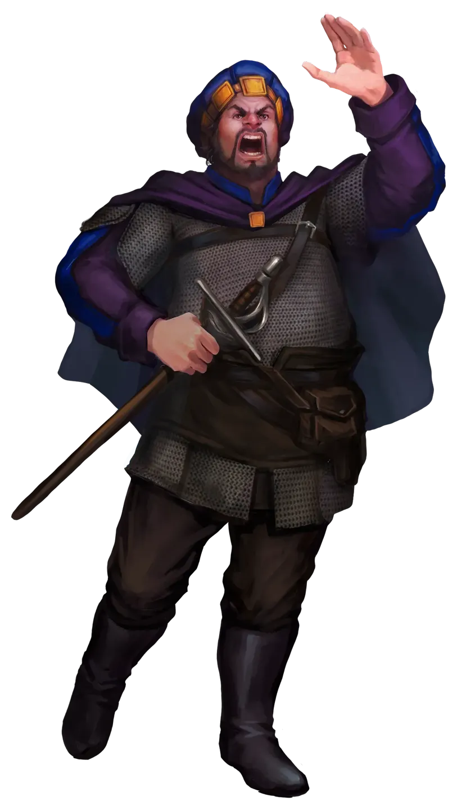
ПРОТИВНИКГригорий✦ТРОФЕЙКонфискованные склянки наркотиков из Дагерм…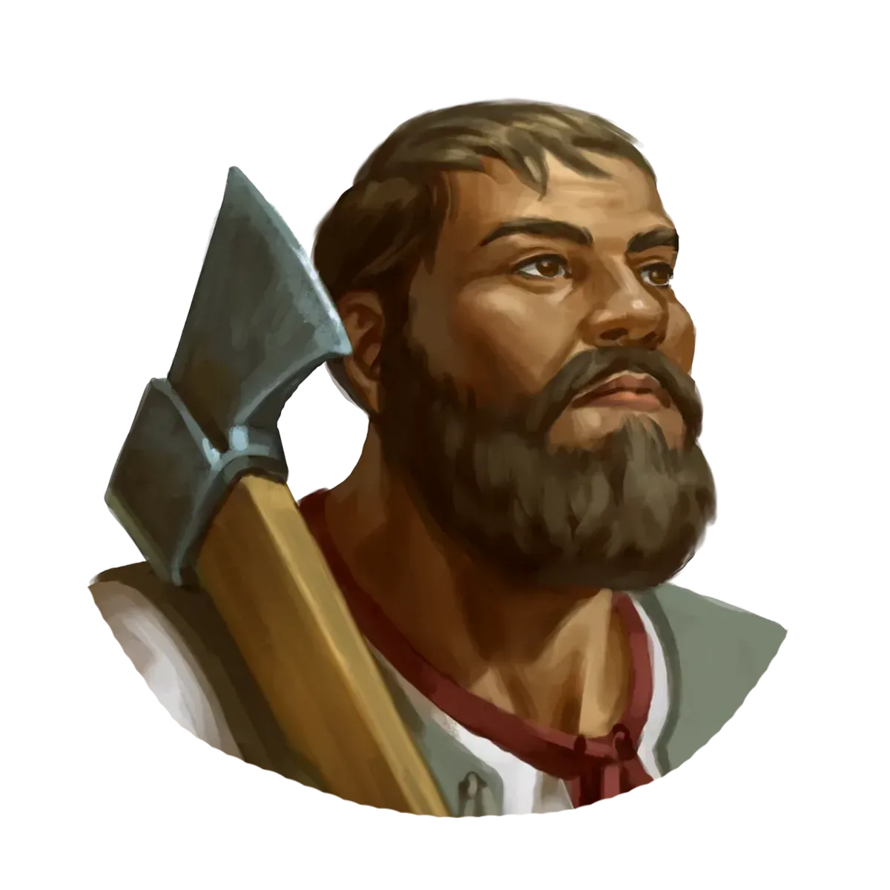
Стас Лесоруб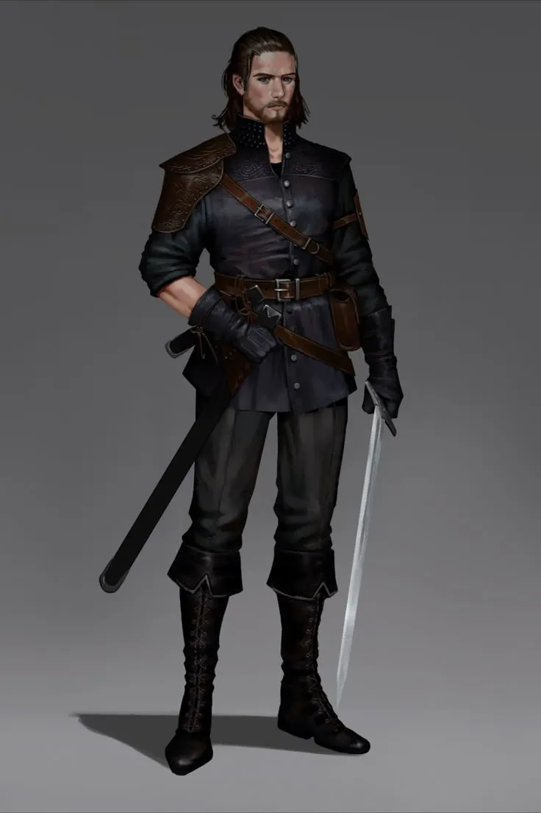
Торговец из МивонаТорговец из Гальта …👤Перепуганный горожа…Вонючая бомба для Барда и ящер в логове
Вечером 26-го Бала отправляется в ближайший лес с вином, ищет грибной круг, чтобы провести оккультный ритуал связи со своей 'старшей' — феей из детства, живущей в Семи Арках. 27 число.
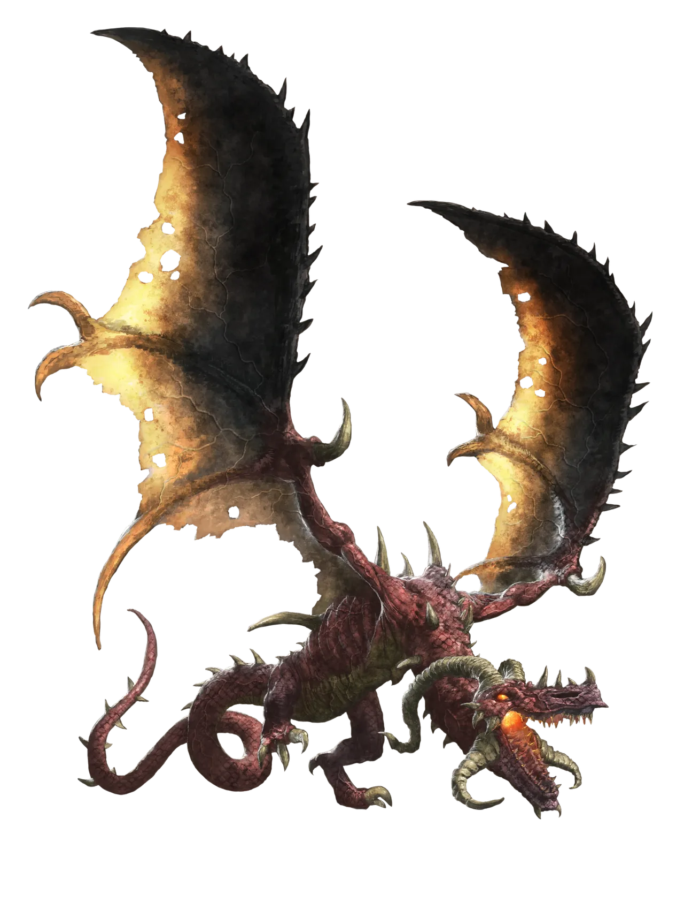
ПРОТИВНИКДрак-ящер в южном логове ПРОТИВНИКГригорий✦ТРОФЕЙКопьё Стасяна (магическое)
ПРОТИВНИКГригорий✦ТРОФЕЙКопьё Стасяна (магическое)Поражение армии и ледяной вожак варгов
Первый армейский бой кампании. Бой с большой стаей варгов под предводительством необычного босса-варга, чьё дыхание из льда.
 ПРОТИВНИКСтая южных варговПРОТИВНИКЛорд Харгулка🐺ПРОТИВНИКЛедяной вожак варгов✦ТРОФЕЙГолова ледяного вожака варгов
ПРОТИВНИКСтая южных варговПРОТИВНИКЛорд Харгулка🐺ПРОТИВНИКЛедяной вожак варгов✦ТРОФЕЙГолова ледяного вожака варговЛаборатория Талдора и сёстры-двойники
Бой с огненными элементалями плазменной комнаты. В южной комнате-кабинете атакуют дерновые псы (земляные элементальные собаки).
 ПРОТИВНИКОгненные элементали лаборатории⚔️ПРОТИВНИКДерновые псы⚔️ПРОТИВНИКЛедяной элементаль воды✦ТРОФЕЙОгненная звезда (медальон)
ПРОТИВНИКОгненные элементали лаборатории⚔️ПРОТИВНИКДерновые псы⚔️ПРОТИВНИКЛедяной элементаль воды✦ТРОФЕЙОгненная звезда (медальон)Королевский ход, могила тигриного владыки и первая армейская победа
Полный королевский ход за конец месяца Эрастус. В зарослях ежевики на равнинах партия обнаруживает каменную могилу.
 ПРОТИВНИКАрмия троллей (южная)💍ТРОФЕЙОтпечаток тигриного кольца (на мыле)
ПРОТИВНИКАрмия троллей (южная)💍ТРОФЕЙОтпечаток тигриного кольца (на мыле)Штурм крепости Харгулки: невидимый клин и древнее эхо Торага
Партия осматривает подходы. ПЕРВЫЙ БОЙ.
 ПРОТИВНИКХобгоблин-командир (лучник)ПРОТИВНИКТролли-стражи крепости🦅ПРОТИВНИКГарпии-певицы крепости✦ТРОФЕЙfortress explored knowledge
ПРОТИВНИКХобгоблин-командир (лучник)ПРОТИВНИКТролли-стражи крепости🦅ПРОТИВНИКГарпии-певицы крепости✦ТРОФЕЙfortress explored knowledgeКровь на нижнем этаже: засада троллей, месть Экундайо и тронный зал Харгулки
ФИНАЛЬНЫЙ БОЙ. В мясной пещере партия встретила скрэга (особого тролля) и великана клана Граглберта — те только что закончили переговоры (один другого по голове ударил).
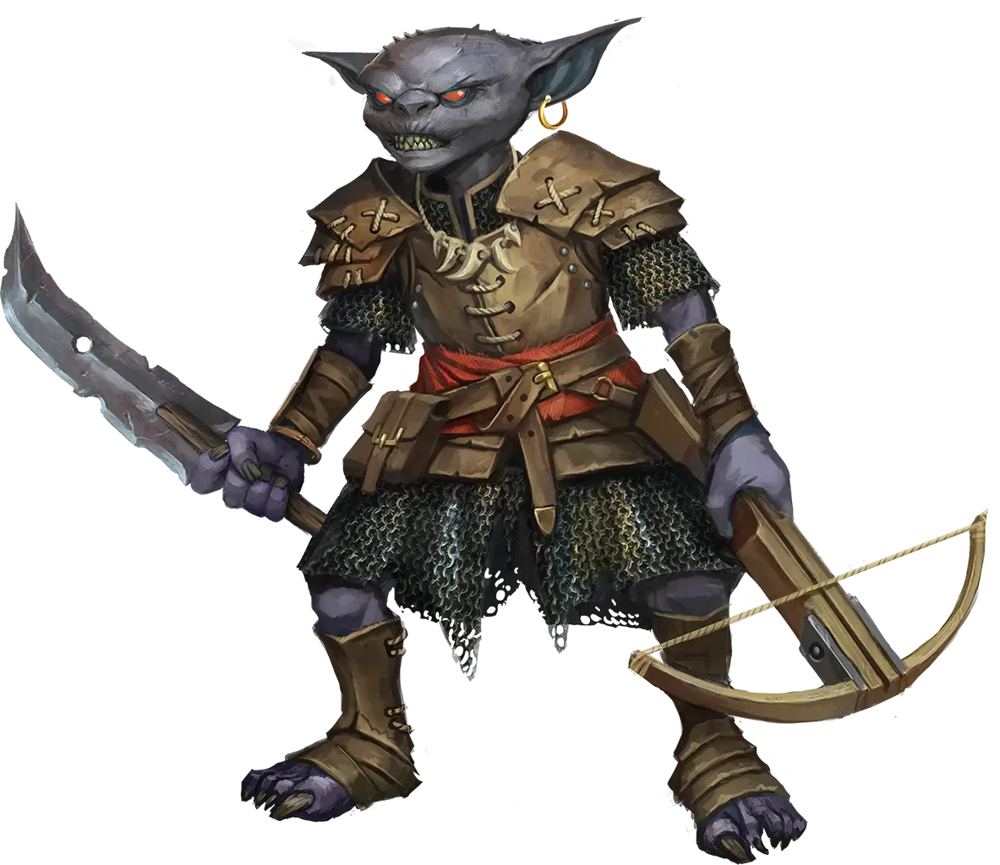
ПРОТИВНИКХобгоблины-снайперы (трое лучников)ПРОТИВНИКСкрэг (особый тролль)ПРОТИВНИКВеликан клана Граглберта⚔️ТРОФЕЙДоспехи, мечи и арбалетные болты лучниковЭтин (двухголовый т…Тролли-псыДоговор с Дриадой и падение Харгулки: победа ценой Балы
КЛИНИЧЕСКАЯ СМЕРТЬ КРОУ И ВСТРЕЧА С ДРИАДОЙ. ВОСКРЕШЕНИЕ КРОУ И КИНЕМАТОГРАФИЧНОЕ ВОЗВРАЩЕНИЕ.
 ПРОТИВНИКЛорд ХаргулкаПРОТИВНИКЭтин (двухголовый тролль)👺ПРОТИВНИКХобгоблин-лучник (сбежавший снайпер)✦ТРОФЕЙМоргенштерн Харгулки (закатный дуб)Тролль-пёс Харгулки👤Дриада (Фея-покрови…👤Клык (разрушен снов…
ПРОТИВНИКЛорд ХаргулкаПРОТИВНИКЭтин (двухголовый тролль)👺ПРОТИВНИКХобгоблин-лучник (сбежавший снайпер)✦ТРОФЕЙМоргенштерн Харгулки (закатный дуб)Тролль-пёс Харгулки👤Дриада (Фея-покрови…👤Клык (разрушен снов…Защита Светоча от магических зверей: чужими руками
DM открывает игровую часть: 'Пока правители и отважные герои королевства находятся вдалеке, сражаясь с опасным троллем, его армией, город живёт как обычно. Партия движется на восток, приближаясь к окраине города.
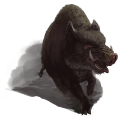
ПРОТИВНИКМагические кабаны⚔️ПРОТИВНИКСтаи магических ворон⚔️ПРОТИВНИКМагическая росомаха✦ТРОФЕЙМоргенштерн +1 Громовый (из закатного древа)Песнь о медвесыче, проклятие Кроу и великан-самогонщик
Партия путешествует, Кроу в этот момент с ними (хоть игрок Тарас отсутствует — отыгрывает DM). Партия после неудачного ритуала засыпает на поляне.
 ПРОТИВНИКФиолетовые ядовитые грибы (Violet Fungi)🍄ПРОТИВНИККрикливый гриб (Шрикер)✦ТРОФЕЙЭльфийский плащ (Cloak of Elvenkind)Григорий👤Кроу (в проклятии)👤Медвесыч (огромный,…
ПРОТИВНИКФиолетовые ядовитые грибы (Violet Fungi)🍄ПРОТИВНИККрикливый гриб (Шрикер)✦ТРОФЕЙЭльфийский плащ (Cloak of Elvenkind)Григорий👤Кроу (в проклятии)👤Медвесыч (огромный,…Логово Медвесыча: огненная звезда, призрачный гнев матери и Бубочка
Призрачные удары попадают по партии (реально наносят урон через мираж). Открытие сессии.
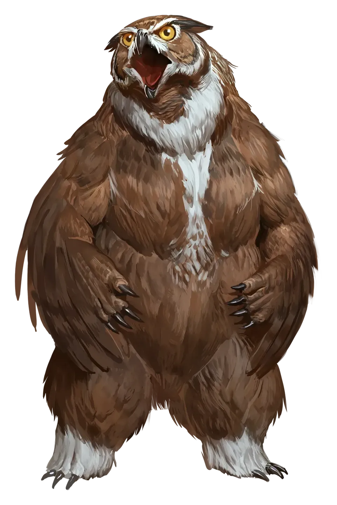
ПРОТИВНИКГигантский Медвесыч (уникальный)🕷️ПРОТИВНИКГигантские пауки паутинной пещеры🐻ПРОТИВНИКХаунт ярости матери Медвесыча💍ТРОФЕЙКольцо звериной дружбы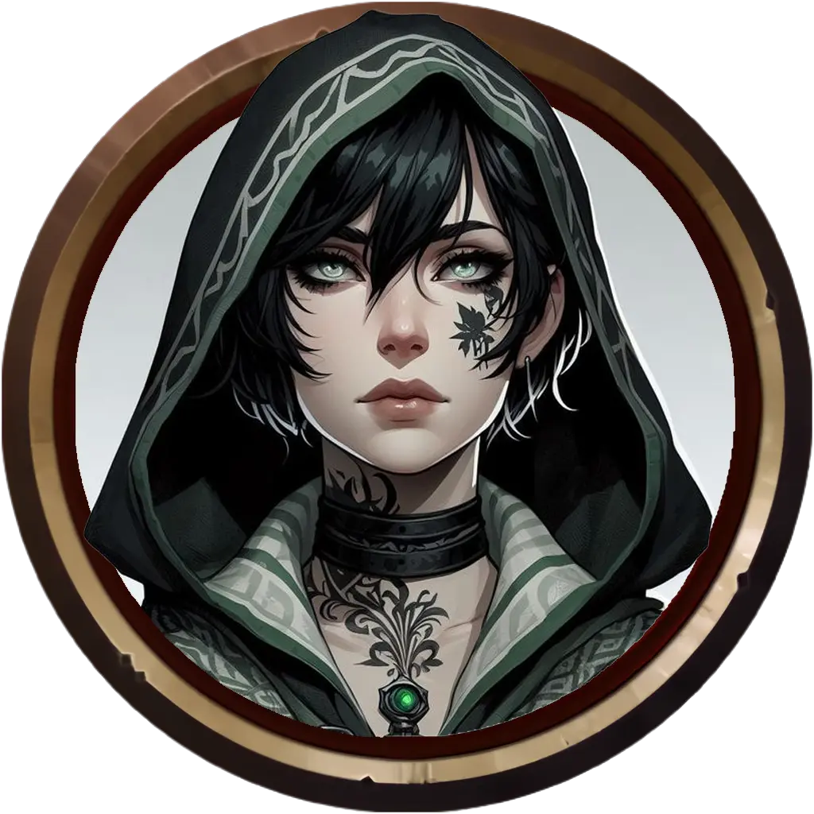
Неудачливый маг (тр…Григорий (дварф-шах…Этеркапы в пещере, проклятое кольцо и тёмная сторона силы Кроу
КЛЮЧЕВОЙ NARRATIVE MOMENT. После боя партия выходит.
 ПРОТИВНИКЭтеркапы (гуманоидные пауки)⚔️ПРОТИВНИКspiders pawn🐻ПРОТИВНИКБуба (медвесыч-детёныш)✦ТРОФЕЙПерчатка из кокона (похожа на Стразорову)
ПРОТИВНИКЭтеркапы (гуманоидные пауки)⚔️ПРОТИВНИКspiders pawn🐻ПРОТИВНИКБуба (медвесыч-детёныш)✦ТРОФЕЙПерчатка из кокона (похожа на Стразорову)Два королевских хода, присяга ящеролюдов и пир в честь Экундайо
DM раскрывает важную новость, произошедшую МЕЖДУ сессиями: дипломаты королевства отправились на остров ящеролюдов и получили от них присягу верности. Первый королевский ход в S48 — месяц Рова.
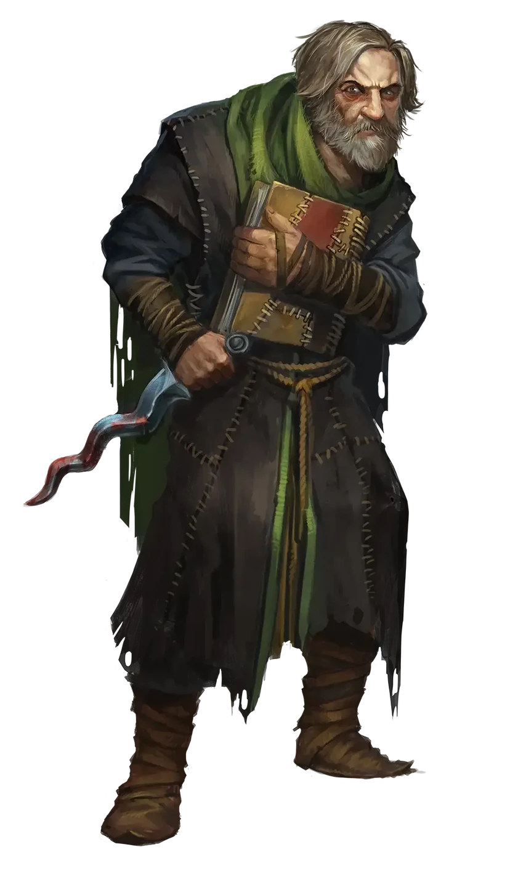
ПРОТИВНИКИнквизитор Абадара✦ТРОФЕЙМагический баклер с руной Minor ReinforcingПир в честь Экундайо, засада на мосту Селена и след культа Героны
Резко — на пир заходит мускулистая женщина-воин с молотом и в броне, явно жрица. Энтави отводит Экундайо в сторону для приватного разговора.
 ПРОТИВНИКГраглбертПРОТИВНИКВиверна ГраглбертаПРОТИВНИКОгры банды Граглберта✦ТРОФЕЙFalchion +1 striking
ПРОТИВНИКГраглбертПРОТИВНИКВиверна ГраглбертаПРОТИВНИКОгры банды Граглберта✦ТРОФЕЙFalchion +1 striking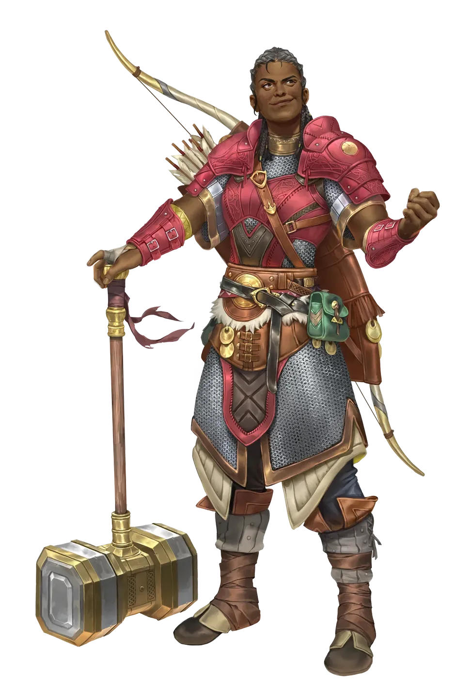
Энтави👤Верховная жрица Гер…👤Культисты Героны в …Засада на культ Героны и побег жрицы Ниски
БОЙ с культистками Героны в подвале амбара. Партия бежит догонять Ниску.
 ПРОТИВНИКНиска🕯️ПРОТИВНИКУбитые культистки Героны⚔️ПРОТИВНИКВерина✦ТРОФЕЙniska bloodstained cloth
ПРОТИВНИКНиска🕯️ПРОТИВНИКУбитые культистки Героны⚔️ПРОТИВНИКВерина✦ТРОФЕЙniska bloodstained clothОхотничий пир на реке Свирь и первый трофей — зелёная виверна
Каэлум сделал recap прошедших 3-х сессий (48-50): партия зачистила подвал с культистами (двое выжили, главарь сбежал свитком), взяли в плен Валерину, после допроса Джейтал-Балы узнали о Чёрных Слёзах и чёрном коте. Жамель объявляет о причине охотничьего домика: они нашли Вата Локера, умершего от виверны, отследили её и нашли следы гидры и
 ПРОТИВНИКЗелёная говорящая виверна (с шипами)✦ТРОФЕЙГолова зелёной виверны (трофей)
ПРОТИВНИКЗелёная говорящая виверна (с шипами)✦ТРОФЕЙГолова зелёной виверны (трофей)Охота на чудовищ Свирь: виверна, мухоловка с цветами и встреча с пятиглавой Гидрой
Recap прошлой сессии (S51?) от Стразора и Каэлума: Кингдом-дела прошли неплохо, нивелировали урон стенам, стройки, известность/деньги/еда. БОЙ 1 — Гигантская поражённая мухоловка у водопада.
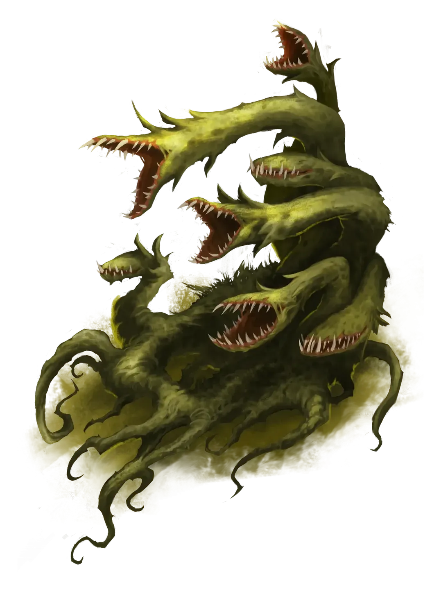
ПРОТИВНИКГигантская мухоловка с лианами (поражённая …🐍ПРОТИВНИКПятиглавая Гидра (ярко-зелёная с красными п…✦ТРОФЕЙГолова Виверны (трофей)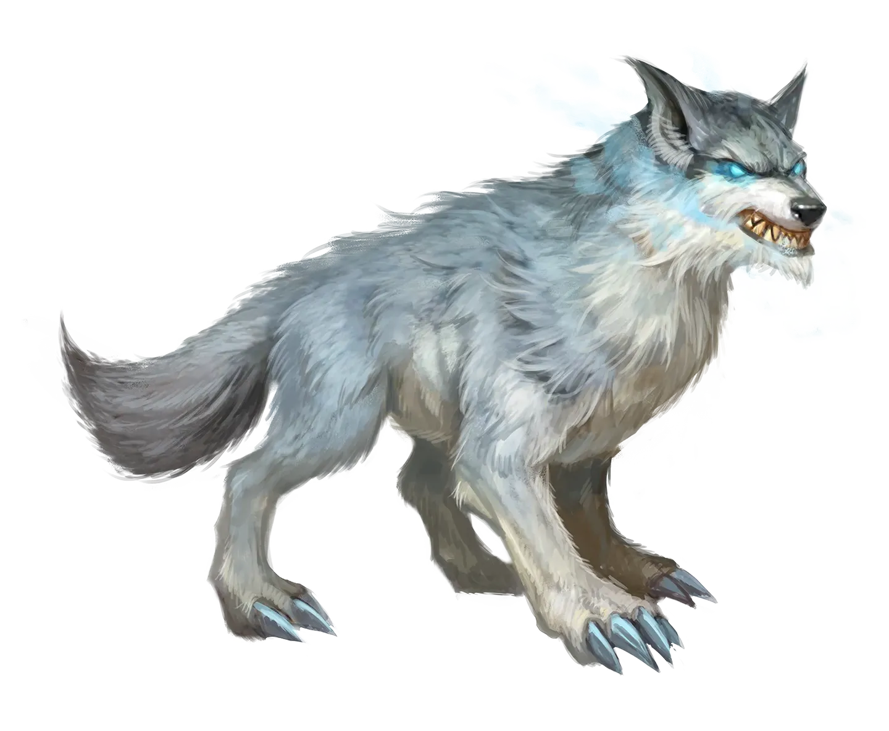
Лазулин (белоснежны…👤Аномеда (бардесса и…Добивание Пятиглавой Гидры, кровавые письмена в гнезде, переименование охотничьего домика в «Пронзённую пташку» и вас…
БОЙ 1 (главный). После убийства Гидры партия осматривает гнездо.
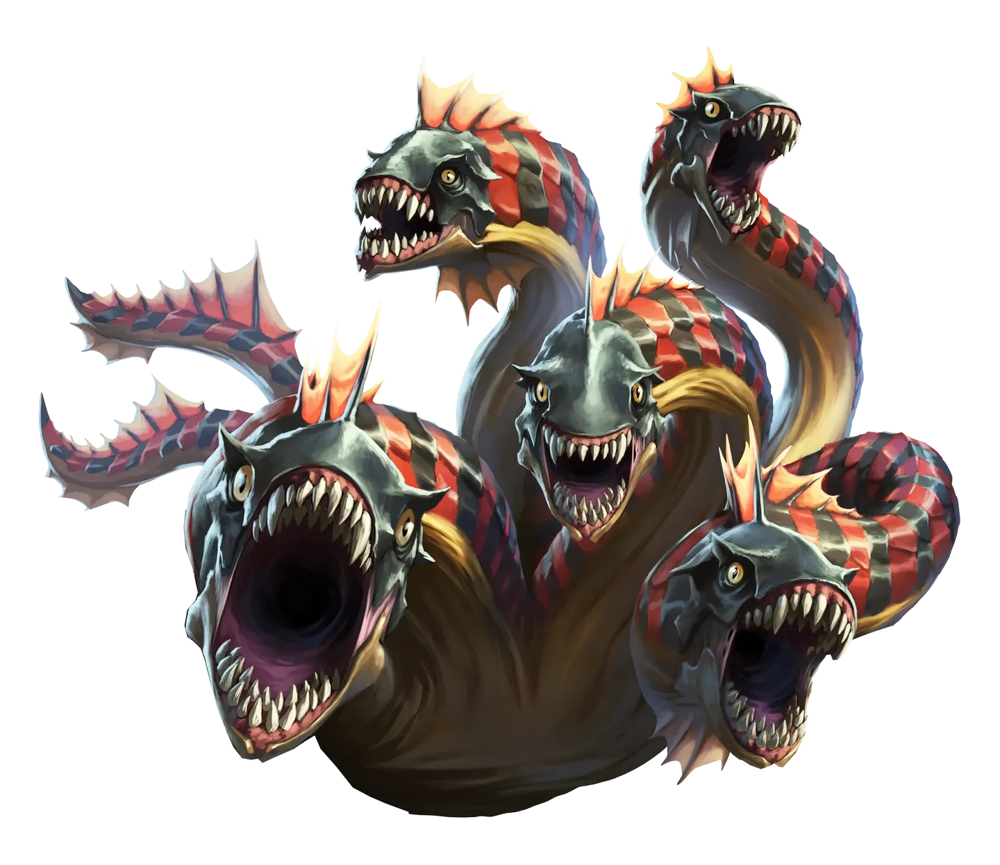
ПРОТИВНИКПятиглавая Гидра (ярко-зелёная с красными п…🦎ПРОТИВНИКВасилиск, вылупившийся из Тимола✦ТРОФЕЙГолова Пятиглавой Гидры (трофей)Семена в плоти: расследование проклятия-портала, контракт из Мивона, белый флаг к волкам и битва на лесопилке
День 5 Нета. День 6 Нета.
 ПРОТИВНИКДва медвесыча с кровавой пеленой (с лесопил…✦ТРОФЕЙНаёмный контракт Тимола из Мивона
ПРОТИВНИКДва медвесыча с кровавой пеленой (с лесопил…✦ТРОФЕЙНаёмный контракт Тимола из МивонаВеликие гоблины придут: штурм храма Ламашту в Тацельфорде и разоблачение лже-пророчества
Партия спускается в подземный храм Ламашту. БОЙ — Храм Ламашту.
 ПРОТИВНИКЖрец-фанатик Ламашту (взявший заложника-эль…🕯️ПРОТИВНИКВторой жрец культа (тот, кто крикнул из-за …🕯️ПРОТИВНИККультисты-крестьяне в робах (десятки)📜ТРОФЕЙСвитки с пророчеством 'Великие гоблины прид…
ПРОТИВНИКЖрец-фанатик Ламашту (взявший заложника-эль…🕯️ПРОТИВНИКВторой жрец культа (тот, кто крикнул из-за …🕯️ПРОТИВНИККультисты-крестьяне в робах (десятки)📜ТРОФЕЙСвитки с пророчеством 'Великие гоблины прид…Зерно для Бездны: следы Технолиги у лесопилки, культ Цветения обретает имя и месяц королевских дел
По пути к лесопилке, на срезе через лес — очень странные следы: огромный двуногий гуманоид (size large) с тремя-четырьмя пальцами 'буквой З'. На лесопилке (закрыта, оцеплена стражей) Стразор с Detect Magic и медициной осматривает лесорубов и находит ДВОИХ БОЛЬНЫХ с ещё не активированными семенами.
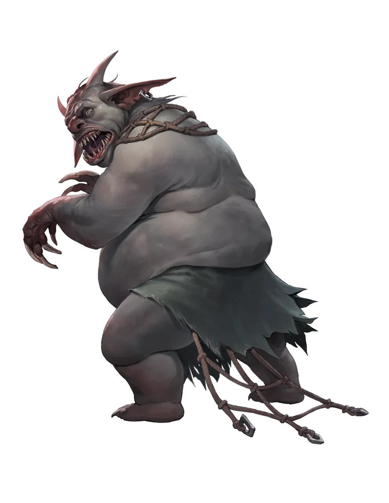
ПРОТИВНИКПаск (низший демон греха лени)✦ТРОФЕЙИзвлечённые чёрные семена (две склянки)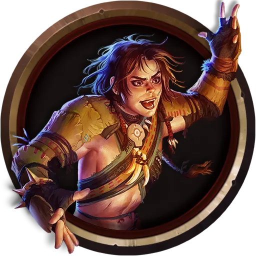
Амири (Варден/Страж…Маска шамана: перформанс 'Нок-Нок — избранник Ламашту' у ворот Зеленохватия и дуппельгангер под маской верховного жреца
План Балы: 'У нас же Нок-Нок. Кульминация перформанса.
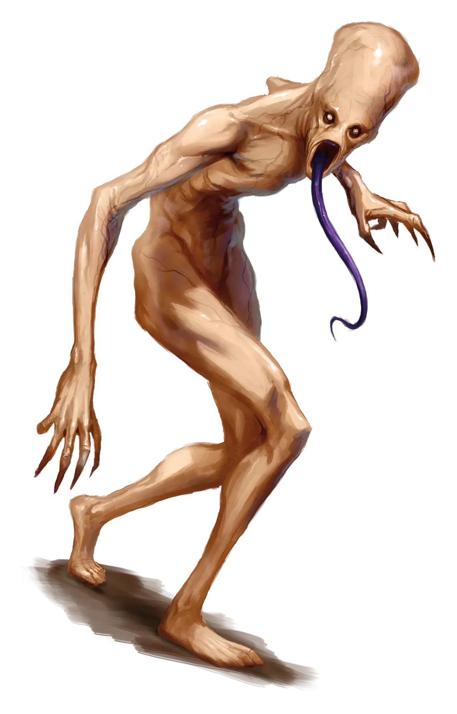
ПРОТИВНИКВерховный шаман Зеленохватия (дуппельгангер…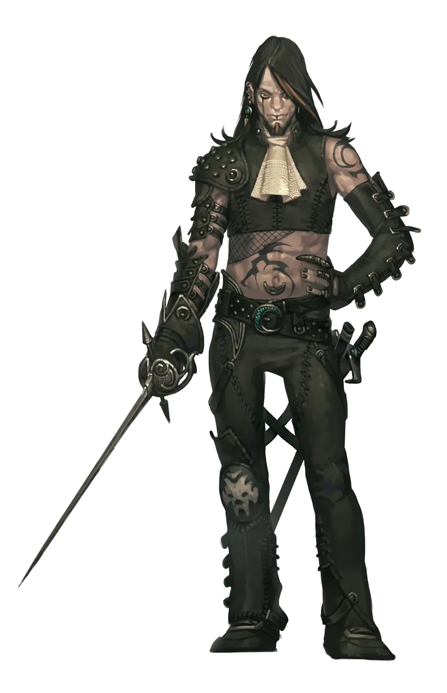
ПРОТИВНИКbattle plants from pouch⚔️ПРОТИВНИКlamashtu bees✦ТРОФЕЙМагический док-слайсер +1 striking (трофей …Ласточка и Три Пальца: пустая деревня после дуппельгангера, потерянная строка Ten Trials из колыбельной, погоня за сн…
4 Кутона. 4 Кутона.
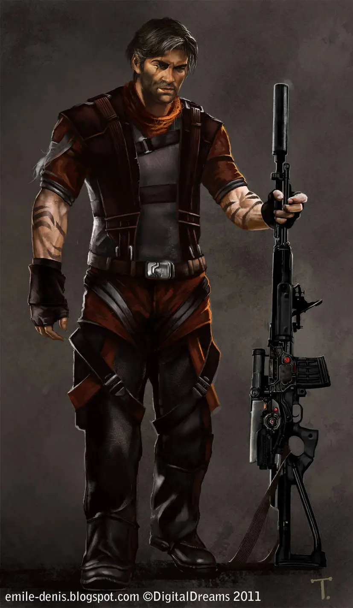
ПРОТИВНИКСнайпер Технолиги (пленный агент, владелец …⚔️ПРОТИВНИКdagermark mercenaries🏹ТРОФЕЙ'Ласточка' — снайперская винтовка агента Те…